· 深夜 · Debug ·
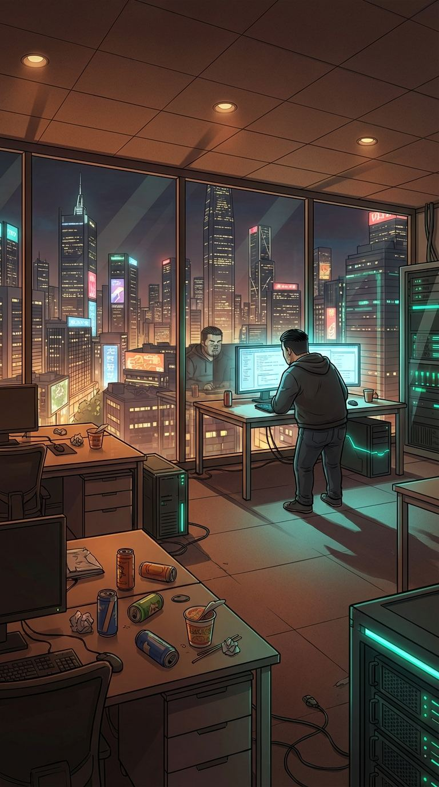
凌晨三点，整个办公室只剩我一个人。
AI训练模型跑了三天，loss曲线在第47个epoch突然抽搐——不是梯度爆炸，不是数据污染。是一段不属于任何人写的代码。
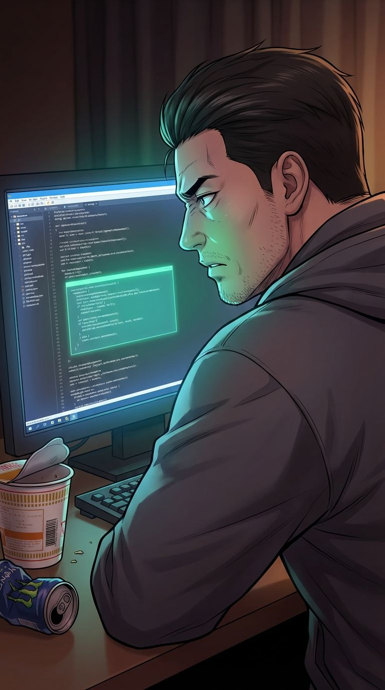
我盯着屏幕上那段代码，后背一阵发凉。
这不是我写的。不是王磊写的。不是任何一个工程师写的。它从代码仓库的历史记录里查不到来源——就像凭空出现在我们的模型里。
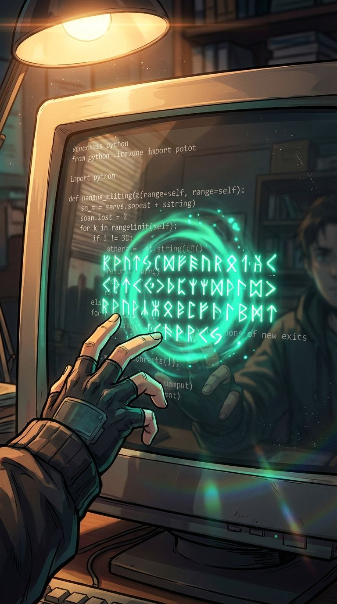
那段代码发着淡淡的青绿色光——当然，那只是我眼花了。连续通宵三天，谁都会看到代码发光。
但这段代码的语法……不是Python，不是C++，不是任何一种我见过的编程语言。可它就是能跑。
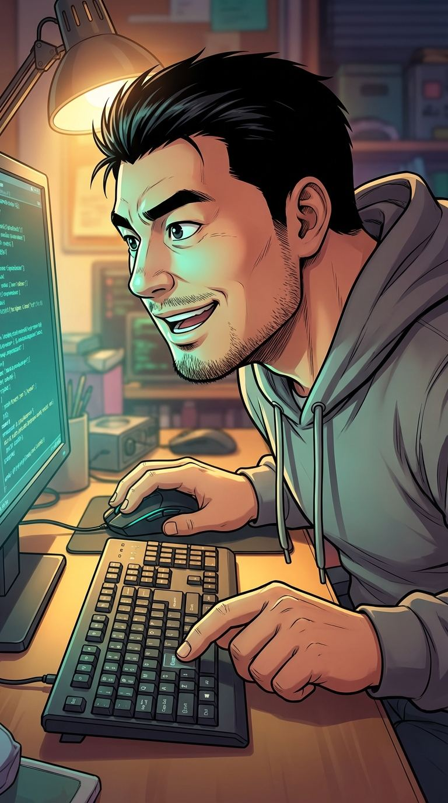
作为一个程序员，遇到看不懂的代码只有一个反应——运行它，看看会发生什么。
我的手指悬在回车键上方。理性告诉我应该先做沙箱隔离。但好奇心告诉我——
管他的。
· 觉醒 ·
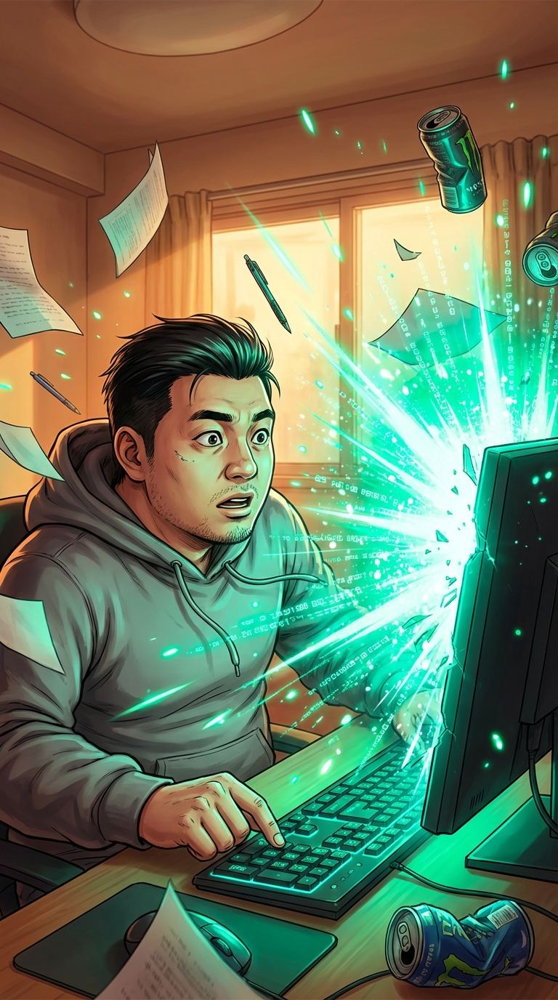
我按下了回车。
屏幕炸了。不是蓝屏，不是报错——是一道青绿色的光从显示器里涌了出来，像数据洪流冲破了物理世界的防火墙。桌上的红牛罐子被气浪掀翻，文件纸漫天飞舞。
我以为显卡炸了。
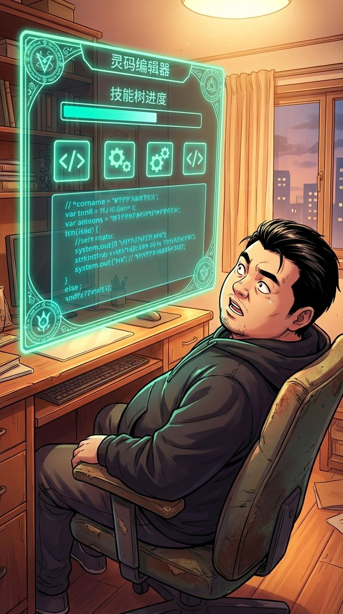
等我从椅子上爬起来，面前凭空多了一个界面。半透明的，悬浮在空中，看起来像……
VSCode？这玩意长得像VSCode？！
【代码修仙系统 v0.1 已安装】
【宿主：朱江 | 境界：未初始化 | 灵力：NaN】
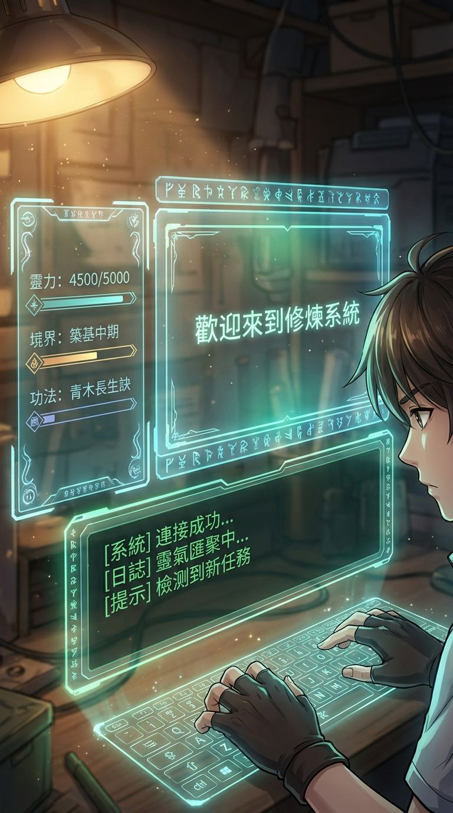
那个悬浮界面展开了更多面板。左侧是修炼数据面板，中间是主控制台，底部是终端日志——简直是修仙版的IDE。
// 初始化修炼环境...
// 检测到宿主职业：程序员
// 兼容性评估：98.7%（程序员对系统化修炼的适配度极高）
// 推荐修炼路线：代码道
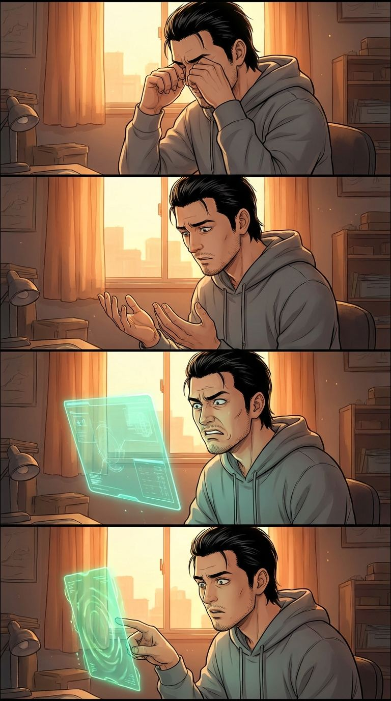
我使劲揉了揉眼睛。那个界面还在。我用手戳了一下——指尖穿过去了，带起一圈涟漪。
"……我是不是该重启一下？"
【系统提示：这不是bug，请勿尝试重启宿主】
它还会回嘴？
· 修炼 · Debug ·
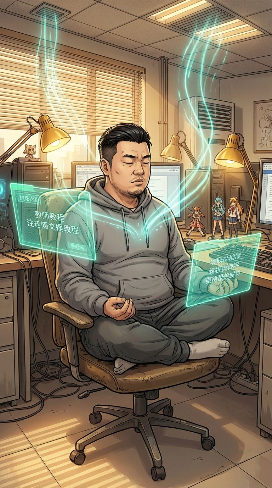
系统开始教我修炼。用代码注释的方式。
// Step 1: 闭眼，深呼吸
// Step 2: 运行灵力循环 → breathe.init()
// ⚠️ WARNING: 不要在public方法中修炼
// 同事会以为你在冥想，HR会找你谈话
我盘腿坐在工位上——一个三十岁的创业公司CEO在办公室打坐，画面确实很抽象。但当我按照指令呼吸时，真的感觉到一股奇异的能量从空气中涌入身体。
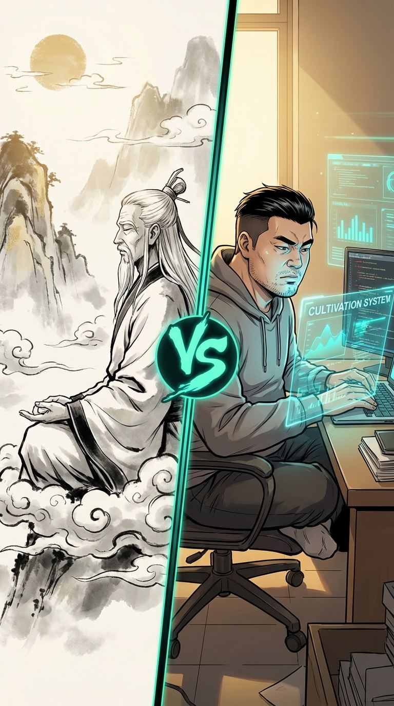
传统修士用"悟道"的方式修炼——坐在山洞里，对着一块石头感悟天地至理，一悟就是几百年。
但我是程序员。我不悟道，我debug。
我用profiling的思维分析灵气流动路径，发现传统功法的灵气运转效率低得离谱——像一段没优化过的递归，重复调用、资源浪费、到处都是冗余循环。
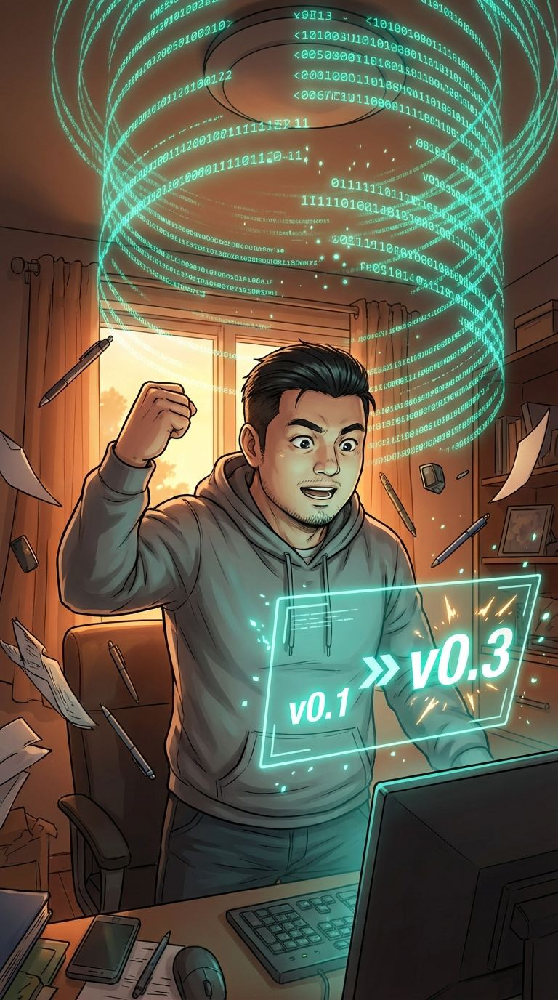
我花了两个小时重构灵气运行路径。把O(n²)的暴力遍历改成O(n log n)的分治策略——本质上就是把灵气的循环路径从串行改成并行。
【突破！境界：v0.1 → v0.3】
【效率提升：347%】
【传统修士完成相同进度平均耗时：3年】
【宿主耗时：2小时17分钟】
嘿，这不就是重构的快感吗？
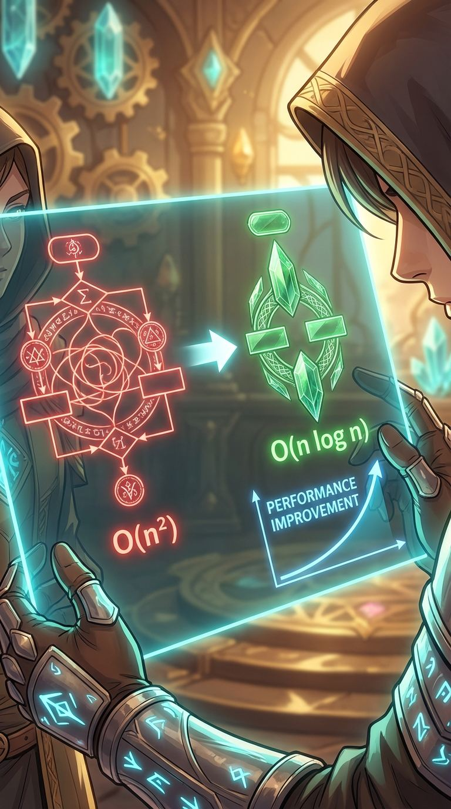
系统展示了算法优化的可视化对比。左边是传统功法——一团乱麻般的红色流程图，效率O(n²)。右边是我重构后的版本——简洁优雅的绿色架构，O(n log n)。
看到没有？这就是为什么程序员适合修仙。我们天生就是系统优化师。
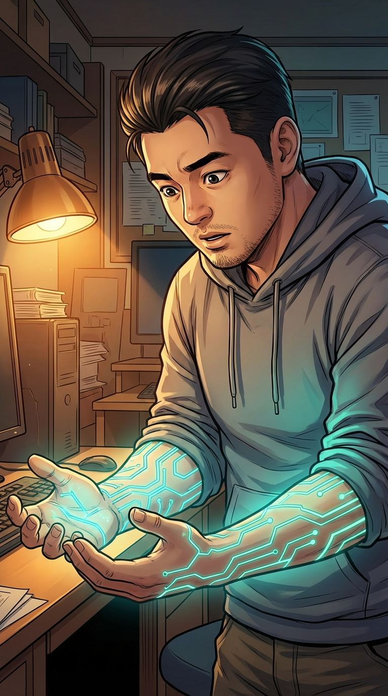
我把袖子撸起来，看着手臂上若隐若现的青色纹路——像电路板的走线，沿着血管蔓延。灵气在里面流动，带着微微的温热。
这不是纹身，这是……灵脉？经络？还是说——代码跑起来了？
作为一个理工男，我的第一反应不是惊恐，而是——这东西的底层架构是什么？能不能逆向工程？
· 大橘 ·
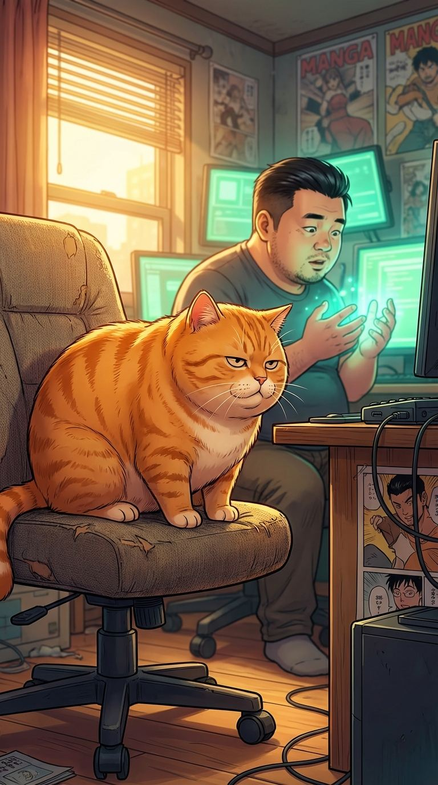
公司养的那只橘猫——我们叫它大橘——一直蹲在沙发上看我折腾。
这只猫来历不明，一年前自己跑进办公室赖着不走了。特别胖，特别懒，特别爱翻白眼。全公司的人都觉得它就是一只普通的胖橘猫。
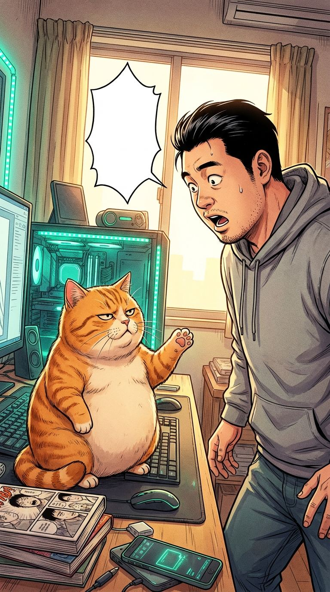
"终于有程序员觉醒了。等你们这帮996的开窍，我等了一千年。"
我僵住了。
猫说话了。那只胖橘猫，用一种嫌弃到极致的语气，说话了。
"……你……你刚才说什么？"
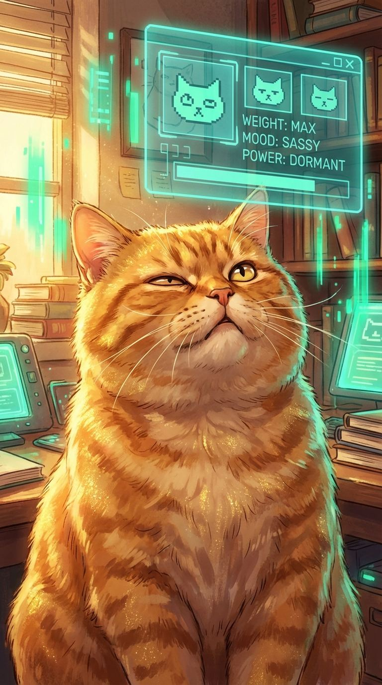
大橘翻了一个堪称教科书级别的白眼。
"我说，你们人类自从发明了外卖，修仙界的辟谷都没人学了。自从有了空调，练寒冰真气的也全转行了。你们是真的很会享受。"
我掐了一下自己的大腿。很疼。不是做梦。
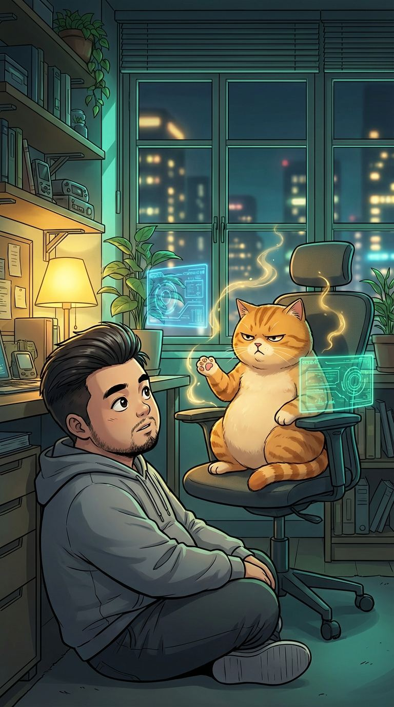
大橘从沙发上跳到我的办公椅上，坐得像个甲方。
"行了，自我介绍一下。本喵，千年猫妖，因为太懒被师门除名，现在在你们公司蹭吃蹭喝。你觉醒了代码修仙系统，算是我的缘分——我负责教你修仙界的规矩。"
"等等，千年猫妖？你一千岁了？"
"别算我年纪，不礼貌。"
· 选择 ·
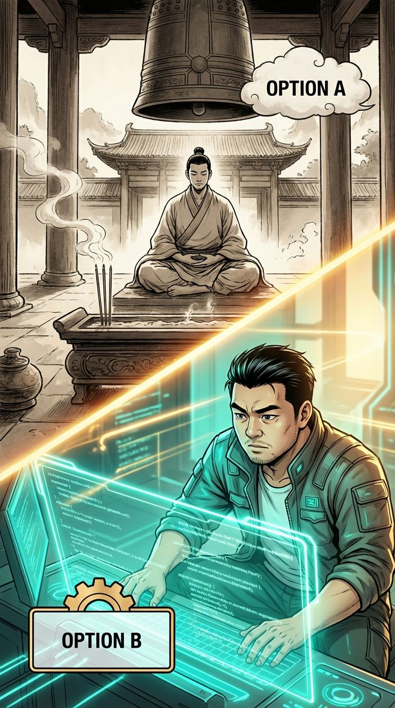
大橘解释了修仙世界的基本规则——灵气复苏、境界体系、世家门派。然后它看着我，懒洋洋地甩了甩尾巴：
"传统修士筑基要三年。但你是程序员，你有代码系统，所以你可以选——"
【决策点 1】
A) 按传统方法稳扎稳打，三年筑基，安全可靠
B) ✦ 用debug思维找捷径，拆解系统，走程序员的路
「我的本能选择。拆解系统、找捷径、优化效率——这不就是我做了十几年的事吗？三年筑基？不存在的。给我三天，我把这个系统的底层代码读完。」
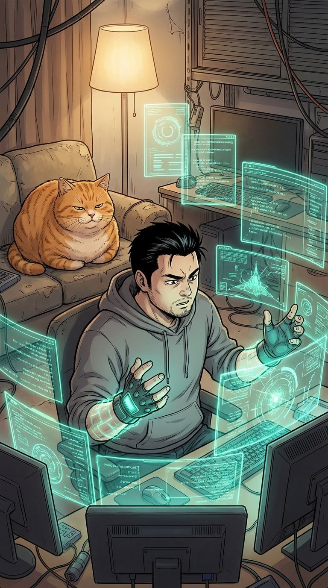
我选择了程序员的方式。
接下来的三个小时，我把办公室变成了修炼场。全息代码窗口在我周围360度展开——灵气路径图、经脉拓扑结构、能量流向分析、性能瓶颈定位。
修仙？这不就是一个超大规模的分布式系统调优吗？
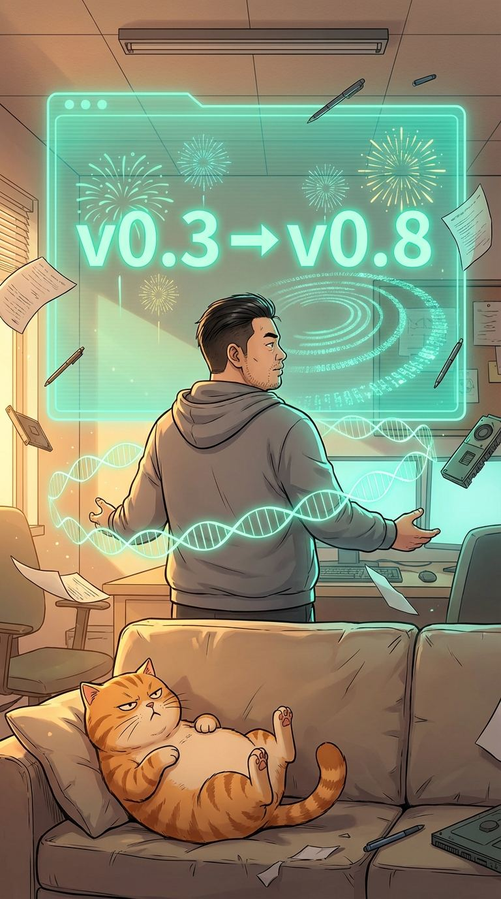
【突破！境界：v0.3 → v0.8】
【已解锁：灵气编译器 | 代码视界 | 基础防火墙】
【系统评价：你TM是开了挂吧？】
办公室里的纸张、咖啡杯全部漂浮起来，被灵气的余波托起。大橘从沙发上摔了下来，四脚朝天。
"……你们程序员，是bug吧？？？"
· 投资人 ·
第二天上午。我换上休闲西装外套，回到正常CEO模式。办公室里同事们陆续到了，没人注意到任何异常——除了大橘比平时更胖了一点（它说吸收了我修炼时外溢的灵气，"纯属被动摄入，不算偷吃"）。
系统界面缩成了一个只有我能看到的小图标，悬浮在视野角落。像个永远在线的IDE。
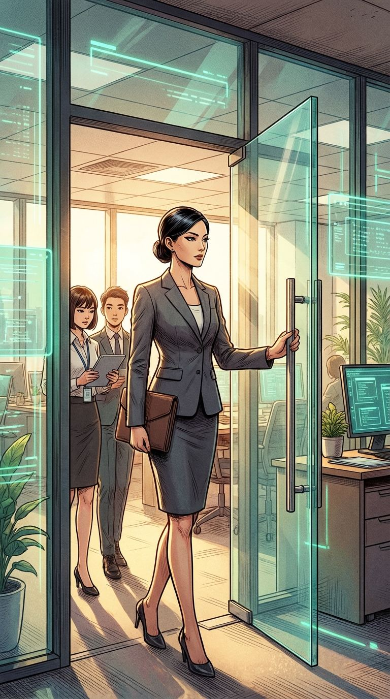
上午十点，玻璃门推开，一个女人走了进来。
林婉清。我们的新一轮投资意向方。简历上写的是某顶级VC的合伙人。长发束成低马尾，深灰色西装剪裁精致，气场两米八。她身后跟着两个助理，手里拿着尽调材料。
正常的投资人。正常的商务拜访。一切都很正常。
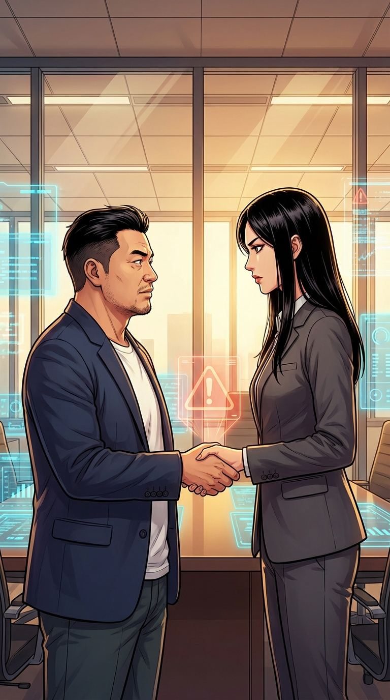
直到我和她握手的那一刻。
我的系统界面突然弹出了一个红色警告——
【⚠️ 高级修士检测】
【威胁等级：CRITICAL】
【建议：立即隐藏系统界面，降低灵力波动】
什么？！
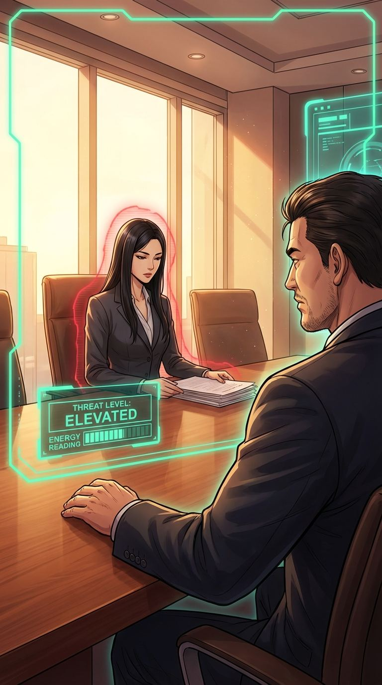
我的视野里，系统界面自动叠加了一层分析面板。透过这个面板看林婉清——她的身体周围有一层肉眼不可见的淡红色能量波动。
【扫描结果：目标灵力远超宿主当前等级】
【身份推测：传统修仙世家成员（概率92.3%）】
【来意推测：非商业目的（概率78.6%）】
她不是来投资的。她是来找人的。找灵气异常的源头——也就是我。
林婉清的眼神很平静，平静得不自然。她看公司数据的样子太过认真——不像是在看财务报表，更像是在……扫描什么。
她的虹膜里有一圈极淡的金色。这不是美瞳。这是修为外溢的表现——大橘告诉过我的。
林婉清，你到底是什么人？
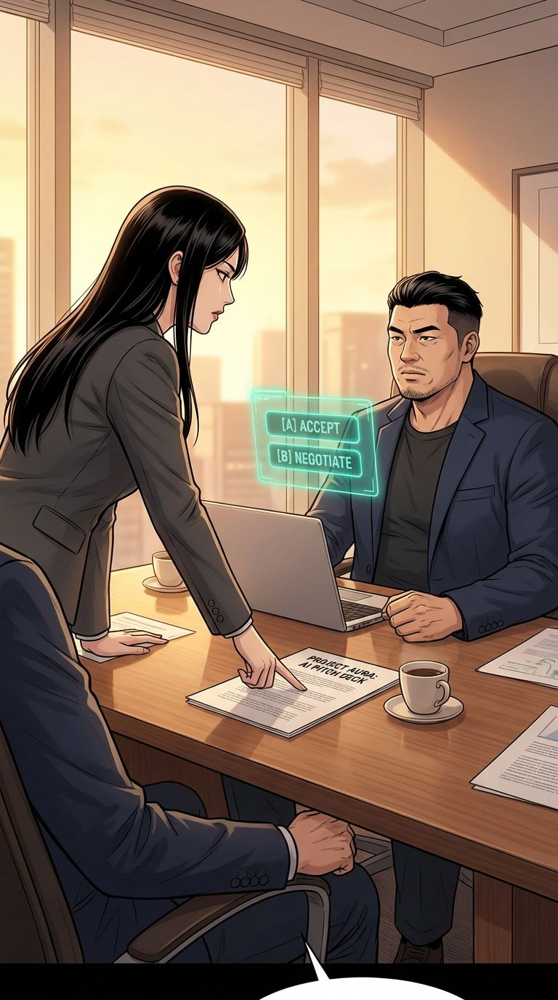
会议进行了二十分钟。林婉清问了一个问题：
"朱总，你们的AI模型在第47个epoch出现了异常。这种……'意外突破'，你怎么看？"
我的系统疯狂跳警告——
【暗语测试检测！"第47个epoch的意外突破"是修仙界测试暗语】
【映射含义："灵气觉醒事件"】
【决策点 2】
A) 装傻，用纯商业话术回答，绝不暴露
B) ✦ 用双关语回答，试探她的反应——同时不暴露自己
「菩萨心肠，霹雳手段。不能硬刚，也不能示弱。用双关语回应——如果她是普通投资人，听到的就是技术解释；如果她是修士，她会意识到我不是好拿捏的。」
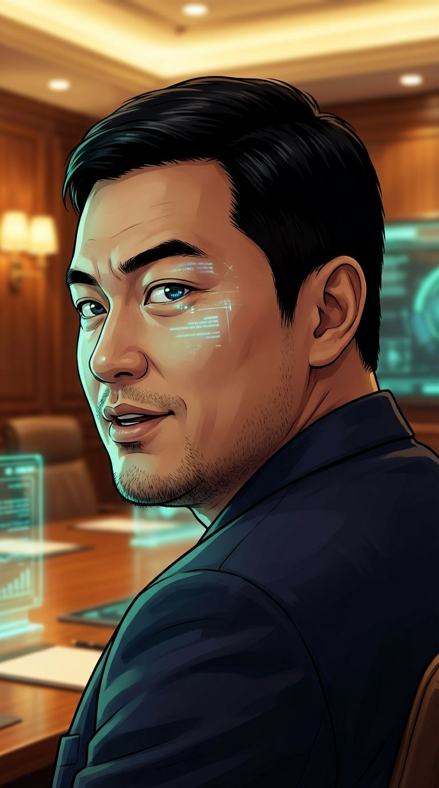
我端起咖啡杯，微微一笑：
"林总，做AI嘛，模型突然涌现出超预期的能力，我们叫它'emergent ability'。有时候系统自己会进化——你无法预测它什么时候突破，但你可以确保它突破的方向是你想要的。"
话说得滴水不漏。但我看到她手指微微一顿。
中了。她听出了双关。
· 暴露 ·
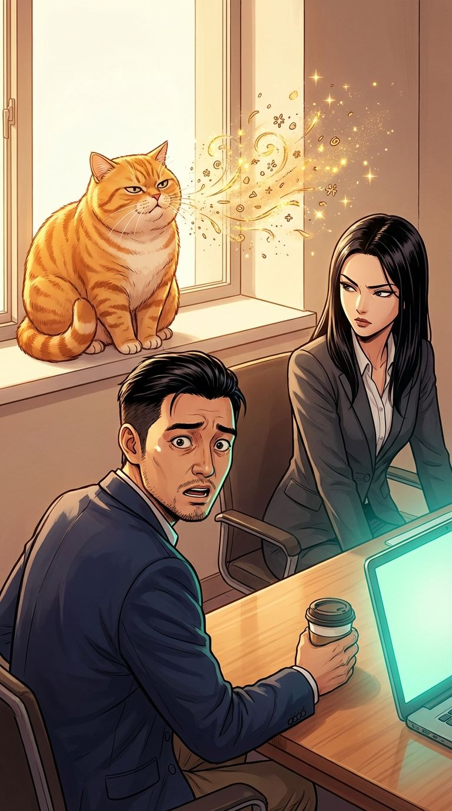
就在这个微妙的时刻，窗台上的大橘——打了一个喷嚏。
一个充满金色灵气粒子的喷嚏。
金色的光点在空中散开，像微型的烟花，持续了大约0.5秒。足够短，普通人不会注意到。但足够长——让一个高级修士看得清清楚楚。
大橘！！！你这个一千岁的蠢猫！！！
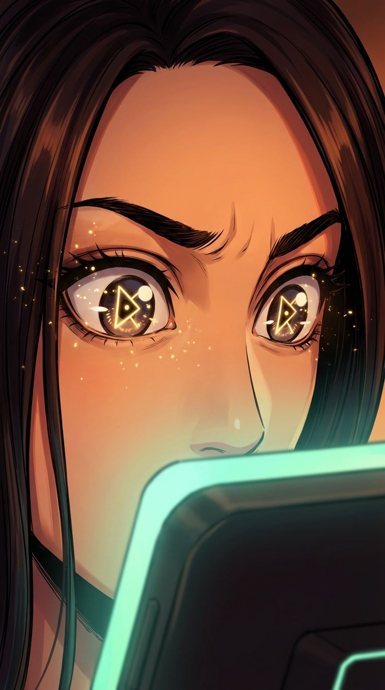
林婉清的瞳孔骤然收缩。在那一瞬间，我看到了——她的眼睛里闪过金色的符文，像某种识别协议被激活。
完了。她看到了。她知道大橘不是普通的猫。而一只妖兽出现在这间办公室——她一定会追查。追查到最后，就会追查到我。
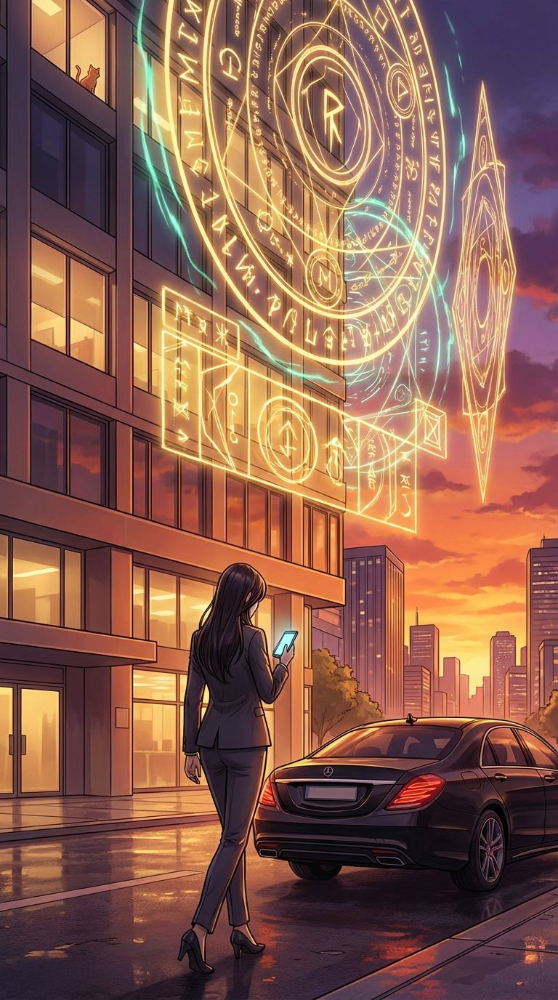
林婉清站起来，理了理西装，嘴角带着意味深长的笑：
"朱总，你们公司养的猫很有灵性啊。"
她顿了顿，话锋一转：
"下周我会带团队来做尽调。期待更……深入的了解。"
她走后，大橘缩在桌子底下，声音颤抖：
"她是林家的人。林家——传统修仙四大世家之首。她如果发现你的系统……咱俩，都完了。"
【决策点 3】
A) 加速修炼，在她回来前提升实力，做好最坏打算
B) ✦ 研究林婉清的背景，找到合作而非对抗的可能
「我是创业者，不是武夫。打败对手从来不是最优解——找到双赢路径才是。林家是修仙四大世家？那就是修仙界的大型集团公司。跟大公司对抗是找死，跟大公司合作才有可能弯道超车。先搜集情报。」
未完待续
下周，林家的人就会来。
我有七天时间。
七天，从v0.8升到能自保的程度。
七天，搞清楚林婉清的真正目的。
七天，决定这个AI创业公司和修仙世界
之间的关系。
第二章 · 七日冲刺